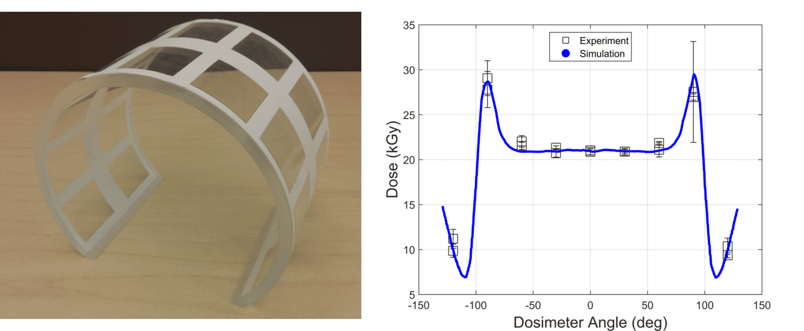
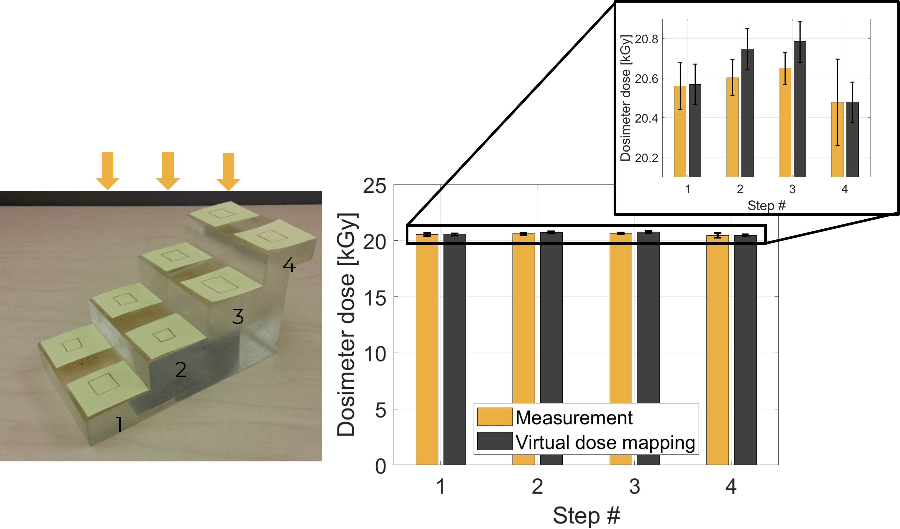

Technology
Harnessing the power of high performance computing in the cloud

The Problem
Dose Insight has supported several clients ranging from startups to Fortune 500 companies with simulating the dose received by medical devices during radiation sterilization. Typical questions addressed through simulations are why do dosimeter readings vary in different measurment runs? Is a particular orientation of the device preferred? Or what is the range of dose received over the entire device?
Our Solution
Dose Insight unlocks all the features listed above by simulating the dose received by a medical device during radiation sterilization using Monte Carlo simulations. Monte Carlo simulations of radiation transport are the “gold standard” in the scientific community for producing accurate and precise predictions of radiation processes. However, available tools require highly specialized expert users and are therefore not broadly used in medical device development community. Dose Insight brings the accuracy of Monte Carlo simulations to non-expert users by providing an easy-to-use interface designed specifically for medical device engineers.
Dose Insight's tool is designed to be used by engineers with familiarity of common CAD tools and operates completely in the cloud for fast processing. The engineer first uploads the CAD model of their medical device through a secure portal, and then selects the intended sterilization modality and, if known, the specific beamline that will be used at a given contract sterilizer. Then the engineer positions the CAD model in the beam, configures a few parameters such double vs single sided exposure, and starts a simulation run. Once complete, a dose report will be emailed to the engineer. The figure above illustrates this workflow.
Validation
In the words of the Nobel Prize-winning physicist Richard Feynman,
If it disagrees with experiment, it's wrong. In that simple statement is the key to science.True to that sentiment, we have extensively validated our simulation technology across all radiation sterilization modalities so that you know you can trust the modeled dose distributions. Examples of this work are shown below.
We performed measurements at the e-beam sterilization facility SteriTek using a variety of phantoms.
The beam energy was measured at a 10 MeV e-beam sterilization facility with an aluminum wedge according to ASTM 51649. Simulations were performed at different beam energies and best agreement was achieved at 9.8 MeV.

We performed measurements on an acrylic cylinder with film dosimeters placed on the circumference of the cylinder. The measured dose values are compared against simulations and we find excellent agreement.

Film dosimeters were placed on each step of an acrylic step phantom. Excellent agreement between measurements and simulations is achieved. It is noticeable that the dose decreases on the top step. This is due to the fact that lower steps receive scatter from the adjacent step.
White Papers
Curious to know more? Take a look at some of the white papers we have published, or get in touch if you have any questions.
Dose Insight's virtual dose mapping toolOverview and discussion of the capabilities of the tool |
Read |
Comparing radiation modalitiesGamma, e-beam, or X-ray? That is the question, and simulations can bring you to an informed decision |
Read |
Guiding product designIncorporate modeling into your design process to retire downstream risks early |
Read |
Sterilization process optimizationQuickly compare how different packaging configurations impact the dose map |
Read |